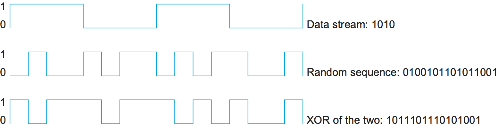
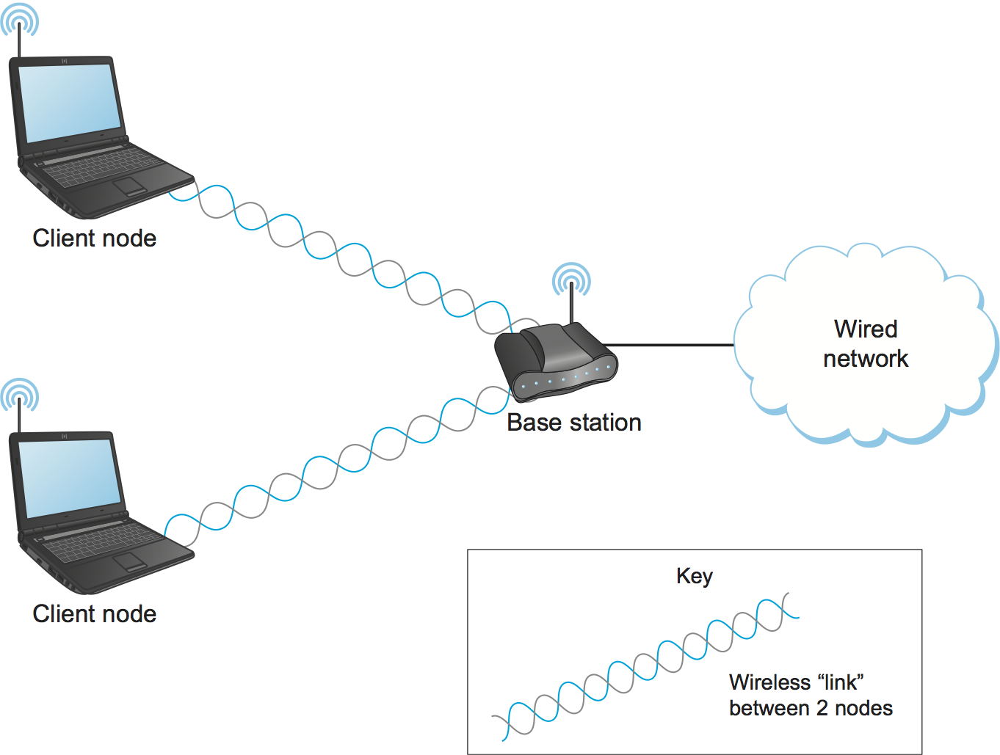
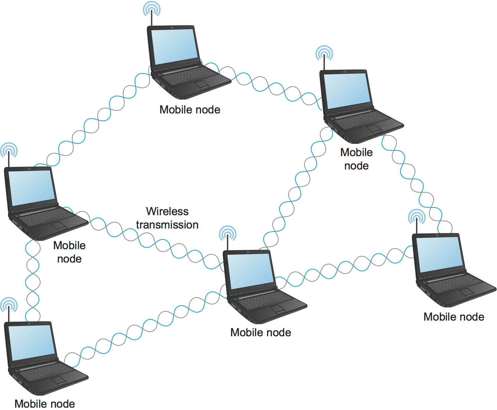
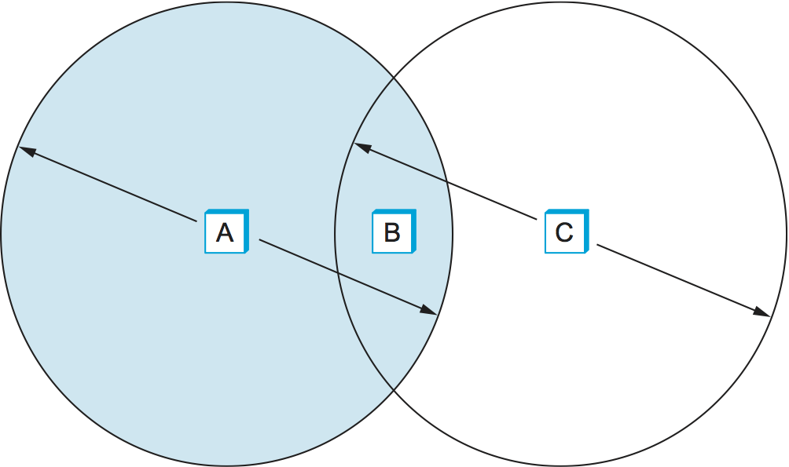
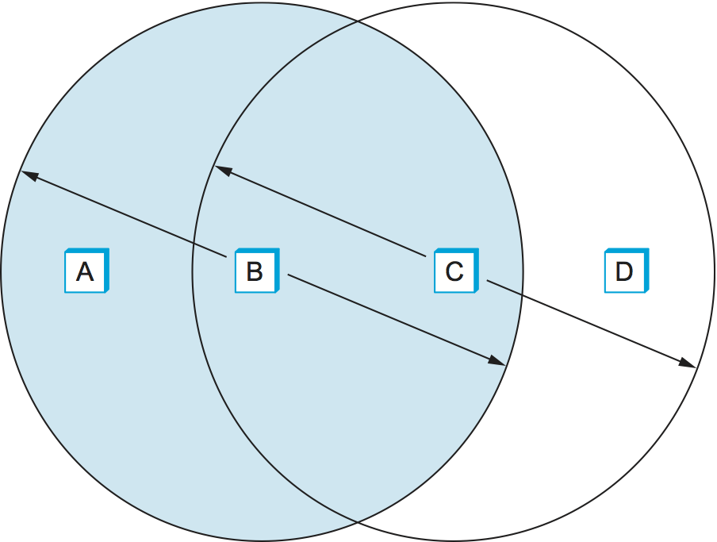
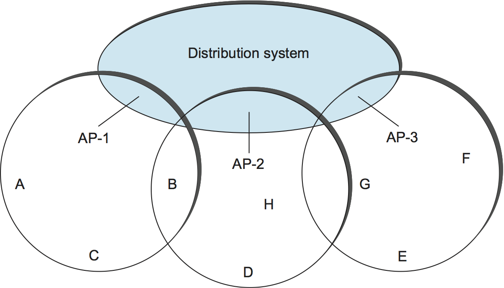
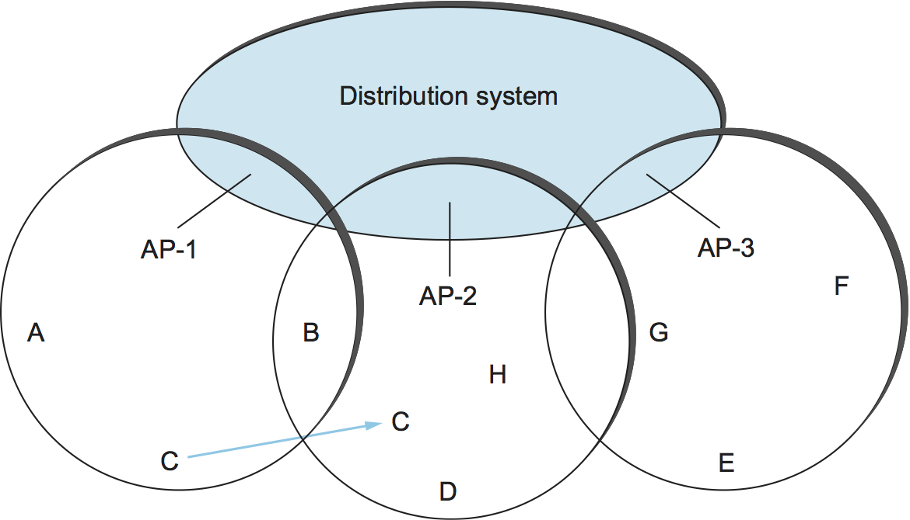
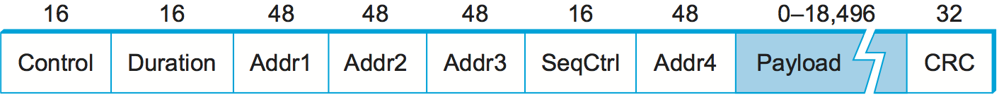
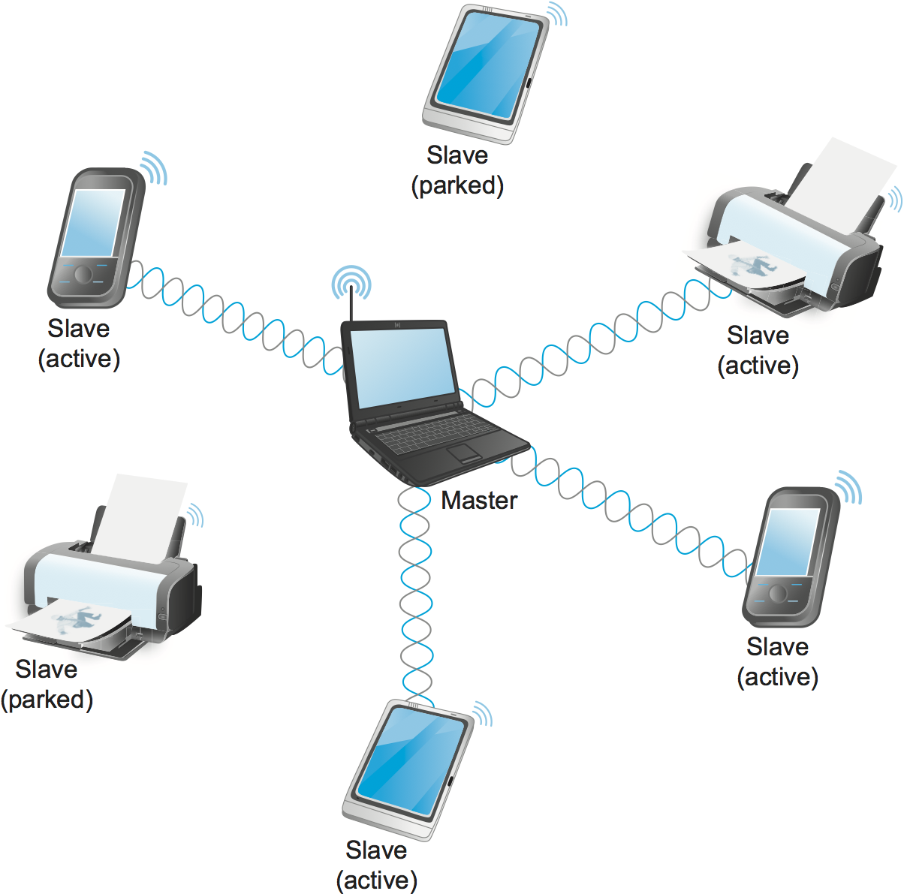

2.7 무선 네트워크
무선 기술은 유선 링크와 중요한 몇 가지 점에서 다르지만, 동시에 많은 공통된 특성도 공유한다. 유선 링크와 마찬가지로 비트 오류 문제는 매우 중요하며, 대부분의 무선 링크에서는 예측하기 어려운 잡음 환경 때문에 보통 더 큰 문제가 된다. 프레이밍과 신뢰성도 해결해야 한다. 유선 링크와 달리 무선에서는 전력이 큰 이슈인데, 특히 무선 링크가 전원 접근이 제한된 작은 이동 장치 (예: 전화기와 센서)에서 자주 사용되기 때문이다. 또한 무선 송신기로 임의로 높은 전력을 마구 쏘아 보낼 수는 없다. 다른 장치와의 간섭 문제가 있고, 주어진 주파수에서 장치가 방출할 수 있는 전력량을 규제하는 규정도 대개 존재한다.
무선 매체는 본질적으로 다중 접속 환경이기도 하다. 자신의 무선 송신을 오직 하나의 수신기에게만 향하게 하거나, 주변에서 충분한 전력을 가진 아무 송신기의 무선 신호도 받지 않도록 하는 일은 어렵다. 따라서 매체 접근 제어는 무선 링크의 핵심 문제다. 또한 공중으로 신호를 보낼 때 누가 그것을 수신하는지 제어하기 어렵기 때문에 도청 문제도 다뤄야 할 수 있다.
무선 기술은 종류가 매우 다양하며, 각각이 여러 차원에서 서로 다른 절충을 선택한다. 이를 구분하는 한 가지 단순한 방법은 제공하는 데이터율과 통신 노드 사이의 거리다. 그 밖의 중요한 차이로는 전자기 스펙트럼의 어느 부분을 사용하는지(면허가 필요한지 여부 포함), 그리고 얼마나 많은 전력을 소비하는지가 있다. 이 절에서는 대표적인 무선 기술 두 가지인 Wi-Fi(좀 더 정확히는 802.11)와 Bluetooth를 살펴본다. 다음 절에서는 ISP 접속 서비스의 맥락에서 셀룰러 네트워크를 다룬다. 표 4는 이들 기술의 개요와 상호 비교를 보여준다.
Bluetooth (802.15.1) |
Wi-Fi (802.11) |
4G 셀룰러 |
|
|---|---|---|---|
일반적인 링크 길이 |
10 m |
100 m |
수십 km |
일반적인 데이터율 |
2 Mbps (shared) |
150-450 Mbps |
1-5 Mbps |
일반적인 용도 |
주변기기를 컴퓨터에 연결 |
컴퓨터를 유선 기지에 연결 |
휴대전화를 유선 기지국에 연결 |
유선 기술과의 유사성 |
USB |
Ethernet |
PON |
대역폭이라는 말은 때로는 헤르츠 단위의 주파수 대역 폭을 뜻하고, 때로는 링크의 데이터율을 뜻한다는 점을 기억할 것이다. 무선 네트워크를 논의할 때는 이 두 개념이 모두 등장하므로, 여기서는 bandwidth를 좀 더 엄밀한 의미인 주파수 대역의 폭으로 사용하고, data rate라는 용어는 표 4처럼 링크를 통해 초당 보낼 수 있는 비트 수를 설명하는 데 사용하겠다.
2.7.1 기본 쟁점
무선 링크는 모두 같은 매체를 공유하므로, 서로에게 지나치게 간섭하지 않으면서 그 매체를 효율적으로 공유하는 것이 과제다. 이 공유의 대부분은 주파수와 공간이라는 차원을 따라 나누어 이루어진다. 특정 지리 영역에서 특정 주파수를 독점적으로 사용하는 권한은 기업과 같은 개별 주체에게 할당될 수 있다. 전자기 신호는 발원지에서 멀어질수록 약해지며, 즉 감쇠되기 때문에, 신호가 덮는 영역을 제한하는 것이 가능하다. 신호의 도달 영역을 줄이려면 송신 전력을 낮추면 된다.
이러한 할당은 보통 미국의 연방통신위원회(FCC) 같은 정부 기관이 정한다. 특정 대역(주파수 범위)은 특정 용도에 배정된다. 어떤 대역은 정부용으로 예약되고, 다른 대역은 AM 라디오, FM 라디오, 텔레비전, 위성 통신, 휴대전화 같은 용도로 예약된다. 그런 다음 이 대역 안의 특정 주파수들이 특정 지리 영역에서 사용되도록 개별 조직에 면허 형태로 부여된다. 마지막으로 몇몇 주파수 대역은 면허 면제 용도로 따로 남겨 두는데, 이 대역에서는 면허가 필요 없다.
면허 면제 주파수를 사용하는 장치도, 그런 제약 없는 공유가 실제로 작동하도록 하기 위해 여전히 일정한 제한을 받는다. 가장 중요한 제한은 송신 전력 상한이다. 이는 신호의 도달 거리를 제한하여 다른 신호와 간섭할 가능성을 낮춘다. 예를 들어 무선 전화기(흔한 비면허 장치)는 도달 거리가 약 100피트 정도일 수 있다.
많은 장치와 응용이 스펙트럼을 공유할 때 자주 등장하는 개념 중 하나가 확산 스펙트럼이다. 확산 스펙트럼의 아이디어는 신호를 더 넓은 주파수 대역에 퍼뜨려 다른 장치가 일으키는 간섭의 영향을 최소화하는 것이다. (확산 스펙트럼은 원래 군사용으로 설계되었기 때문에, 이러한 “다른 장치”는 신호를 방해하려는 존재인 경우가 많았다.) 예를 들어 주파수 도약은 확산 스펙트럼 기법 중 하나로, 신호를 임의의 주파수 순서에 따라 전송한다. 즉, 먼저 한 주파수로 보내고, 다음에는 두 번째, 세 번째 주파수로 보내는 식이다. 이 주파수 순서는 진정한 난수가 아니라 의사난수 생성기가 알고리즘으로 계산한 값이다. 수신기는 송신기와 같은 알고리즘을 사용하고 같은 시드로 초기화하므로, 송신기와 동기화하여 주파수를 바꿔 가며 프레임을 올바르게 수신할 수 있다. 이 방식은 두 신호가 우연히 고립된 비트 이상으로 같은 주파수를 계속 사용할 가능성을 낮춤으로써 간섭을 줄인다.
직접 시퀀스라 불리는 두 번째 확산 스펙트럼 기법은 간섭 허용도를 높이기 위해 중복 정보를 추가한다. 각 데이터 비트는 전송 신호에서 여러 비트로 표현되므로, 전송된 비트 일부가 간섭으로 손상되더라도 원래 비트를 복원할 만큼의 중복이 대개 남는다. 송신기는 자신이 보내려는 각 비트마다 그 비트와 n개의 임의 비트에 대한 배타적 논리합을 실제로 보낸다. 주파수 도약과 마찬가지로, 이 임의 비트열은 송신기와 수신기 모두가 알고 있는 의사난수 생성기로 만들어진다. 전송되는 값은 n비트 치핑 코드라고 하며, 신호를 원래 프레임에 필요했을 것보다 n배 넓은 주파수 대역에 퍼뜨린다. 그림 43은 4비트 치핑 시퀀스의 예를 보여 준다.
{kind=link}

그림 43. 4비트 치핑 시퀀스의 예.
전자기 스펙트럼의 서로 다른 부분은 서로 다른 성질을 가지므로, 어떤 것은 통신에 더 적합하고 어떤 것은 덜 적합하다. 예를 들어 어떤 것은 건물을 통과할 수 있고 어떤 것은 그렇지 못하다. 정부는 통신에 가장 적합한 부분, 즉 전파와 마이크로파 범위만 규제한다. 좋은 스펙트럼에 대한 수요가 증가함에 따라, 아날로그 텔레비전이 디지털로 대체되며 사용 가능해지는 스펙트럼에 큰 관심이 쏠리고 있다.
오늘날의 많은 무선 네트워크에서는 두 종류의 종단점을 볼 수 있다. 한쪽 종단점은 흔히 기지국이라고 부르며, 보통 이동성은 없지만 그림 44에서 보이듯 인터넷이나 다른 네트워크에 대한 유선 연결(또는 최소한 고대역폭 연결)을 가지고 있다. 링크의 다른 쪽 끝에 있는 노드, 여기서는 클라이언트 노드로 표시된 노드는 흔히 이동성을 가지며, 다른 노드와의 모든 통신을 위해 기지국으로 가는 링크에 의존한다.
그림 44에서는 두 장치 사이(예: 기지국과 그 클라이언트 노드 중 하나 사이)에 제공되는 무선 “링크” 추상화를 물결 모양의 두 줄로 표현했다는 점에 주목하자. 무선 통신의 흥미로운 측면 중 하나는, 한 장치가 보낸 전파를 여러 장치가 동시에 수신할 수 있기 때문에 점대다점 통신을 자연스럽게 지원한다는 점이다. 하지만 상위 계층 프로토콜에는 점대점 링크 추상화를 만드는 편이 종종 유용하며, 이 절 뒤에서 그 방법의 예를 보게 될 것이다.
그림 44에서 기지국이 아닌 노드(클라이언트 노드) 사이의 통신이 기지국을 통해 라우팅된다는 점도 주목하자. 이는 한 클라이언트 노드가 내보낸 전파를 다른 클라이언트 노드가 실제로 수신할 수 있음에도 불구하고 그렇다. 일반적인 기지국 모델은 클라이언트 노드들 사이의 직접 통신을 허용하지 않는다.
{kind=link}

그림 44. 기지국을 사용하는 무선 네트워크.
이 토폴로지는 질적으로 서로 다른 세 가지 이동성 수준을 시사한다. 첫 번째 수준은 이동성이 없는 경우로, 예를 들어 수신기가 기지국의 지향성 전송을 받기 위해 고정된 위치에 있어야 하는 상황이다. 두 번째 수준은 Bluetooth처럼 하나의 기지 범위 안에서의 이동성이다. 세 번째 수준은 휴대전화와 Wi-Fi처럼 기지 사이를 이동하는 이동성이다.
{kind=link}

그림 45. 무선 애드혹 또는 메시 네트워크.
최근 점점 더 관심을 받는 대안적 토폴로지가 메시 또는 애드혹 네트워크다. 무선 메시에서는 노드들이 대등한 존재이며, 즉 특별한 기지국 노드가 없다. 각 노드가 바로 앞선 노드의 도달 범위 안에만 있다면 메시지는 피어 노드의 연쇄를 통해 전달될 수 있다. 이는 그림 45에 나와 있다. 이렇게 하면 네트워크의 무선 부분을 단일 무선 장치의 제한된 도달 거리 너머까지 확장할 수 있다. 기술 간 경쟁의 관점에서 보면, 이 방식은 더 짧은 거리용 기술이 범위를 확장하여 더 긴 거리용 기술과 경쟁할 가능성을 열어 준다. 메시 네트워크는 또한 메시지가 A 지점에서 B 지점으로 가는 여러 경로를 제공함으로써 장애 허용성을 제공한다. 메시 네트워크는 비용도 점진적으로 들이면서 점진적으로 확장할 수 있다. 반면 메시 네트워크에서는 기지국이 아닌 노드도 하드웨어와 소프트웨어에서 일정 수준 이상의 복잡도를 갖춰야 하므로, 단위당 비용과 전력 소비가 늘어날 수 있다. 이는 배터리 구동 장치에서 중요한 고려 사항이다. 무선 메시 네트워크는 연구 대상으로서 상당한 관심을 받고 있지만, 기지국 기반 네트워크에 비하면 아직 상대적으로 초기 단계에 있다. 또 다른 유망 신기술인 무선 센서 네트워크도 흔히 무선 메시를 형성한다.
이제 공통적인 무선 이슈 몇 가지를 살펴봤으니, 두 가지 대표적인 무선 기술의 세부 사항을 살펴보자.
2.7.2 Wi-Fi (802.11)
대부분의 독자는 IEEE 802.11 표준에 기반한 무선 네트워크를 사용해 봤을 것이며, 이는 흔히 Wi-Fi라고 불린다. Wi-Fi는 기술적으로는 상표이며, Wi-Fi Alliance라는 업계 단체가 소유하고 802.11 적합성 인증을 담당한다. Ethernet과 마찬가지로 802.11은 제한된 지리적 영역(가정, 사무실 건물, 캠퍼스)에서 사용되도록 설계되었고, 주된 과제는 공유 통신 매체에 대한 접근을 조정하는 것이다. 여기서 그 매체는 공간을 통해 전파되는 신호다.
물리적 특성
802.11은 다양한 주파수 대역에서 동작하며 여러 가지 데이터율을 제공하는 여러 종류의 물리 계층을 정의한다.
원래의 802.11 표준은 두 개의 무선 기반 물리 계층 표준을 정의했다. 하나는 주파수 도약(폭 1MHz인 79개 주파수 대역 위)을 사용했고, 다른 하나는 직접 시퀀스 확산 스펙트럼(11비트 치핑 시퀀스 사용)을 사용했다. 둘 다 2 Mbps 정도의 데이터율을 제공했다. 이후 물리 계층 표준 802.11b가 추가되어, 직접 시퀀스의 변형을 사용해 최대 11 Mbps를 지원했다. 이 세 표준은 모두 전자기 스펙트럼의 2.4GHz 면허 면제 대역에서 동작했다. 다음으로는 직교 주파수 분할 다중화(OFDM)라는 주파수 분할 다중화의 변형을 사용해 최대 54 Mbps를 제공한 802.11a가 나왔다. 802.11a는 5GHz 면허 면제 대역에서 동작한다. 이어서 802.11g가 등장했고, 역시 OFDM을 사용해 최대 54 Mbps를 제공했다. 802.11g는 802.11b와 하위 호환된다(그리고 다시 2.4GHz 대역으로 돌아간다).
이 글을 쓰는 시점에는 많은 장치가 802.11n 또는 802.11ac를 지원하며, 각각 보통 장치당 150 Mbps에서 450 Mbps 정도의 데이터율을 달성한다. 이 향상은 부분적으로 다중 안테나 사용과 더 넓은 무선 채널 대역폭 허용 덕분이다. 다중 안테나 사용은 보통 multiple-input, multiple-output의 약자인 MIMO라고 부른다. 가장 최근에 등장하는 표준인 802.11ax는 다음 절에서 설명할 4G/5G 셀룰러 네트워크의 부호화 및 변조 기법 다수를 채택함으로써 처리량을 다시 크게 개선할 것으로 기대된다.
상용 제품이 802.11의 둘 이상의 변형을 지원하는 것은 흔한 일이다. 많은 기지국은 다섯 가지 변형(a, b, g, n, ac) 모두를 지원한다. 이렇게 하면 어떤 표준 하나만 지원하는 장치와도 호환성을 확보할 수 있을 뿐 아니라, 두 제품이 특정 환경에서 가장 높은 대역폭 옵션을 선택할 수도 있다.
모든 802.11 표준이 지원 가능한 최대 비트율을 정의하지만, 대개는 더 낮은 비트율도 함께 지원한다는 점을 주목할 만하다 (예: 802.11a는 6, 9, 12, 18, 24, 36, 48, 54 Mbps의 비트율을 허용한다). 비트율이 낮을수록 잡음 환경에서 전송 신호를 해독하기가 더 쉽다. 서로 다른 비트율을 달성하기 위해 서로 다른 변조 방식이 사용된다. 또한 오류 정정 부호 형태의 중복 정보 양도 달라진다. 중복 정보가 많을수록 비트 오류에 대한 복원력이 높아지지만, 그만큼 유효 데이터율은 낮아진다 (전송 비트 중 더 많은 부분이 중복 정보이기 때문이다).
시스템은 자신이 놓인 잡음 환경을 바탕으로 최적의 비트율을 선택하려고 하며, 비트율 선택 알고리즘은 꽤 복잡할 수 있다. 흥미롭게도 802.11 표준은 특정한 접근법을 명시하지 않고, 알고리즘을 각 장비 제조사에 맡긴다. 비트율을 선택하는 기본적인 방법은 물리 계층에서 신호 대 잡음비(SNR)를 직접 측정하거나, 패킷이 얼마나 자주 성공적으로 전송되고 확인응답되는지를 측정해 SNR을 추정함으로써 비트 오류율을 가늠하는 것이다. 일부 접근법에서는 송신자가 더 높은 비트율로 하나 이상의 패킷을 가끔 시험 전송해 성공하는지 살펴본다.
충돌 회피
언뜻 보기에는 무선 프로토콜도 Ethernet과 같은 알고리즘을 따를 것처럼 보일 수 있다. 즉, 링크가 놀 때까지 기다렸다가 전송하고, 충돌이 발생하면 백오프하는 방식이다. 대략적으로는 802.11도 그렇게 동작한다. 하지만 무선에는 추가적인 복잡성이 있다. Ethernet의 노드는 다른 모든 노드의 전송을 수신할 수 있고 송신과 수신을 동시에 할 수 있지만, 무선 노드에는 이 두 조건이 모두 성립하지 않는다. 그 결과 충돌 검출은 훨씬 더 복잡해진다. 무선 노드가 보통 같은 주파수에서 동시에 송신과 수신을 할 수 없는 이유는 송신기가 만들어 내는 전력이 수신되는 어떤 신호보다도 훨씬 커서 수신 회로를 압도하기 때문이다. 또 어떤 노드가 다른 노드의 전송을 수신하지 못하는 이유는 그 노드가 너무 멀리 있거나 장애물에 가려져 있기 때문일 수 있다. 이 상황은 처음 보이는 것보다 조금 더 복잡하며, 아래의 설명이 이를 보여 준다.
{kind=link}

그림 46. 숨은 노드 문제. A와 C는 서로에게는 보이지 않지만, 그들의 신호는 B에서 충돌할 수 있다. (B의 도달 범위는 표시하지 않았다.)
그림 46에 묘사된 상황을 생각해 보자. A와 C는 모두 B의 도달 범위 안에 있지만 서로의 도달 범위 안에는 없다. A와 C가 모두 B와 통신하고 싶어 각자 프레임을 보낸다고 하자. A와 C의 신호는 서로에게 닿지 않으므로 둘은 상대의 존재를 알지 못한다. 이 두 프레임은 B에서 서로 충돌하지만, Ethernet과 달리 A와 C 어느 쪽도 이 충돌을 알지 못한다. A와 C는 서로에 대해 숨은 노드라고 한다.
{kind=link}

그림 47. 노출된 노드 문제. B와 C는 서로의 신호를 들을 수 있지만, B가 A로 전송하는 동안 C가 D로 전송해도 간섭은 없다. (A와 D의 도달 범위는 표시하지 않았다.)
노출된 노드 문제라고 하는 관련 문제는 그림 47과 같은 상황에서 발생한다. 여기서는 네 개의 노드 각각이 자기 바로 왼쪽과 오른쪽의 노드에게만 닿는 신호를 송수신할 수 있다. 예를 들어 B는 A 및 C와 프레임을 주고받을 수 있지만 D에는 닿지 못하고, C는 B와 D에는 닿지만 A에는 닿지 못한다. B가 A로 전송하고 있다고 하자. 노드 C는 B의 전송을 들을 수 있으므로 이 통신을 알고 있다. 하지만 C가 B의 전송을 들을 수 있다는 이유만으로 누구에게도 전송할 수 없다고 결론내리는 것은 잘못이다. 예를 들어 C가 노드 D로 전송하려고 한다고 하자. C의 D에 대한 전송은 A가 B로부터 수신하는 능력에 간섭하지 않으므로 문제가 되지 않는다. (우리 예에서는 B가 송신 중이므로, A가 B로 송신하는 상황에 간섭하는 것은 아니다.)
802.11은 Ethernet에서 쓰는 CSMA/CD의 충돌 검출과 달리, CSMA/CA를 사용해 이러한 문제를 해결한다. 여기서 CA는 충돌 회피를 뜻한다. 이를 작동시키기 위해 몇 가지 요소가 필요하다.
Carrier Sense 부분은 충분히 단순해 보인다. 송신기는 패킷을 보내기 전에 다른 전송이 들리는지 확인하고, 들리지 않으면 전송한다. 하지만 숨은 노드 문제 때문에, 다른 송신기의 신호가 없기를 기다리는 것만으로는 수신기 관점에서 충돌이 일어나지 않을 것이라고 보장할 수 없다. 이런 이유로 CSMA/CA의 한 부분은 수신기가 송신자에게 보내는 명시적 ACK이다. 패킷이 성공적으로 해독되고 수신기에서 CRC를 통과하면, 수신기는 송신자에게 ACK를 되돌려 보낸다.
충돌이 실제로 발생하면 패킷 전체가 무용지물이 된다는 점에 유의하자. 이 때문에 802.11은 RTS-CTS(Ready to Send-Clear to Send)라는 선택적 메커니즘을 추가한다. 이는 숨은 노드 문제를 어느 정도 완화한다. 송신자는 의도한 수신자에게 RTS라는 짧은 패킷을 보내고, 이 패킷이 성공적으로 수신되면 수신자는 또 다른 짧은 패킷인 CTS로 응답한다. 숨은 노드는 RTS를 듣지 못했을 수 있지만 CTS는 들을 가능성이 크다. 이는 사실상 수신기 도달 범위 안의 노드들에게 잠시 동안 아무 것도 보내지 말라고 알리는 셈인데, 의도된 전송 시간은 RTS와 CTS 패킷에 포함되어 있다. 그 시간이 지나고 작은 간격이 더 흐르면 매체는 다시 사용 가능하다고 볼 수 있고, 다른 노드는 전송을 시도할 수 있다.
물론 두 노드가 동시에 링크가 비어 있다고 감지하고 RTS 프레임을 전송하려고 하여, RTS 프레임끼리 서로 충돌할 수도 있다. 송신자들은 일정 시간이 지나도 CTS 프레임을 받지 못할 때 충돌이 발생했음을 알아차리며, 이 경우 각자 임의의 시간 동안 기다린 뒤 다시 시도한다. 각 노드가 지연하는 시간은 Ethernet에서와 매우 비슷한 지수 백오프 알고리즘으로 정해진다.
RTS-CTS 교환이 성공하면 송신자는 데이터 패킷을 보내고, 모든 것이 잘 되면 그 패킷에 대한 ACK를 받는다. 제때 ACK가 오지 않으면, 송신자는 위에서 설명한 같은 과정을 사용해 다시 채널 사용을 요청한다. 물론 이 시점에는 다른 노드들도 다시 채널 접근을 시도하고 있을 수 있다.
분배 시스템
지금까지 설명한 내용만 놓고 보면 802.11은 메시(애드혹) 토폴로지를 가진 네트워크에 적합하며, 메시 네트워크를 위한 802.11s 표준 개발도 완료에 가까워지고 있다. 그러나 현재 시점에서 거의 모든 802.11 네트워크는 기지국 중심 토폴로지를 사용한다.
모든 노드가 완전히 동등한 대신, 어떤 노드는 이동할 수 있고 (예: 노트북), 어떤 노드는 유선 네트워크 인프라에 연결된다. 802.11은 이러한 기지국을 액세스 포인트(AP)라고 부르며, 이들은 이른바 분배 시스템으로 서로 연결된다. 그림 48은 세 개의 액세스 포인트를 연결하는 분배 시스템을 보여 주는데, 각 액세스 포인트는 어떤 지역의 노드들을 서비스한다. 각 액세스 포인트는 적절한 주파수 범위 안의 어떤 채널에서 동작하며, 일반적으로 각 AP는 이웃 AP와 다른 채널을 사용한다.
{kind=link}

그림 48. 분배 시스템에 연결된 액세스 포인트.
분배 시스템의 세부 사항은 여기서 중요하지 않다. 예를 들어 Ethernet일 수도 있다. 중요한 점은 분배 네트워크가 무선 링크와 같은 프로토콜 계층인 링크 계층에서 동작한다는 것이다. 다시 말해, 상위 수준 프로토콜(예: 네트워크 계층)에 의존하지 않는다.
두 노드가 서로의 도달 범위 안에 있다면 직접 통신할 수는 있지만, 이 구성의 핵심 아이디어는 각 노드가 하나의 액세스 포인트와 연결 관계를 맺는다는 것이다. 예를 들어 노드 A가 노드 E와 통신하려면, A는 먼저 자신의 액세스 포인트(AP-1)로 프레임을 보내고, AP-1은 이를 분배 시스템을 통해 AP-3으로 전달하며, AP-3이 마지막으로 E에게 그 프레임을 전송한다. AP-1이 왜 메시지를 AP-3으로 전달해야 한다는 것을 알았는지는 802.11의 범위를 벗어나며, 브리징 프로토콜을 썼을 수도 있다. 802.11이 규정하는 것은 노드가 액세스 포인트를 어떻게 선택하는지, 그리고 더 흥미롭게는 노드가 한 셀에서 다른 셀로 움직일 때 이 알고리즘이 어떻게 동작하는지다.
AP를 선택하는 기법은 스캐닝이라고 하며, 다음 네 단계로 이루어진다.
노드는
Probe프레임을 보낸다.도달 범위 안의 모든 AP는
Probe Response프레임으로 응답한다.노드는 액세스 포인트 하나를 선택하고, 그 AP에
Association Request프레임을 보낸다.AP는
Association Response프레임으로 응답한다.
노드는 네트워크에 참여할 때마다, 그리고 현재 AP가 더 이상 만족스럽지 않을 때 이 프로토콜을 수행한다. 예를 들어 노드가 멀어짐에 따라 현재 AP의 신호가 약해졌을 때 이런 일이 일어날 수 있다. 노드가 새로운 AP를 얻을 때마다, 새 AP는 분배 시스템을 통해 이전 AP에 그 변경 사실을 알린다 (이 일은 4단계에서 일어난다).
{kind=link}

그림 49. 노드 이동성.
그림 49와 같이,
노드 C가 AP-1이 서비스하던 셀에서 AP-2가 서비스하는 셀로 이동하는 상황을
생각해 보자. 이동하면서 C는 Probe 프레임을 보내고,
결국 AP-2로부터 Probe Response 프레임을 받게 된다.
어느 시점이 되면 C는 AP-1보다 AP-2를 더 선호하게 되고, 그 액세스 포인트와
연결을 맺는다.
방금 설명한 메커니즘은 노드가 액세스 포인트를 능동적으로 찾기 때문에
능동 스캐닝이라고 불린다. AP는 또한 주기적으로
Beacon 프레임을 보내 액세스 포인트의 능력을 광고하는데,
여기에는 AP가 지원하는 전송률도 포함된다. 이것을 수동 스캐닝이라 부르며,
노드는 Beacon 프레임을 바탕으로 액세스 포인트에
Association Request 프레임만 보내면 해당 AP로
전환할 수 있다.
프레임 형식
그림 50에
나와 있는 802.11 프레임 형식의 대부분은 우리가 예상하는 그대로다.
프레임에는 각각 48비트 길이의 송신 노드 주소와 목적지 노드 주소,
최대 2312바이트의 데이터, 그리고 32비트 CRC가 들어 있다.
Control 필드에는 중요한 세 개의 하위 필드가 들어 있다
(그림에는 표시되지 않음). 하나는 프레임이 데이터를 담는지,
RTS 또는 CTS 프레임인지, 혹은 스캐닝 알고리즘에 사용되는지를 나타내는
6비트 Type 필드이고, 다른 하나는 아래에서 설명할
ToDS와 FromDS라는 한 쌍의 1비트 필드다.
{kind=link}

그림 50. 802.11 프레임 형식.
802.11 프레임 형식의 특이한 점은 주소가 두 개가 아니라 네 개라는 점이다.
이 주소들이 어떻게 해석되는지는 프레임의 Control 필드에 있는
ToDS 및 FromDS 비트 설정에 달려 있다. 이는 프레임이
분배 시스템을 가로질러 전달되었을 가능성을 고려하기 위한 것이며,
이 경우 원래 송신자는 가장 최근에 전송한 노드와 같지 않을 수 있다.
비슷한 논리가 목적지 주소에도 적용된다. 가장 단순한 경우, 한 노드가 다른
노드로 직접 전송할 때는 두 DS 비트가 모두 0이고,
Addr1은 대상 노드를,
Addr2는 송신 노드를 가리킨다. 가장 복잡한 경우에는 두
DS 비트가 모두 1로 설정되며, 이는 메시지가 무선 노드에서
분배 시스템으로 들어간 뒤, 다시 분배 시스템에서 다른 무선 노드로 나갔음을
의미한다. 두 비트가 모두 설정되면 Addr1은 최종 목적지를,
Addr2는 직전 송신자(분배 시스템에서 최종 목적지로 프레임을
전달한 노드)를, Addr3는 중간 목적지(무선 노드로부터 프레임을
받아 분배 시스템을 통해 전달한 노드)를, Addr4는 원래
송신자를 가리킨다. 그림 48의
예로 말하면, Addr1은 E에 해당하고,
Addr2는 AP-3를,
Addr3는 AP-1을,
Addr4는 A를 가리킨다.
무선 링크의 보안
무선 링크가 전선이나 광섬유에 비해 가진 꽤 분명한 문제 중 하나는, 자신의 데이터가 어디까지 퍼져 나갔는지 확신하기 어렵다는 점이다. 의도한 수신자가 그것을 받았는지는 대체로 알 수 있겠지만, 얼마나 많은 다른 수신자들이 그 전송을 함께 받아 갔는지는 알 수 없다. 따라서 데이터의 프라이버시가 중요하다면 무선 네트워크는 도전 과제를 안겨 준다.
데이터 프라이버시 자체가 걱정되지 않거나, 혹은 다른 방식으로 이미 해결했다고 하더라도, 권한 없는 사용자가 자신의 네트워크에 데이터를 주입하는 문제는 걱정될 수 있다. 다른 것이 아니더라도, 그런 사용자는 집과 ISP 사이의 유한한 대역폭처럼 원래 자신이 쓰고 싶은 자원을 소비할 수 있다.
이러한 이유로 무선 네트워크에는 보통 링크 자체와 그 위를 흐르는 데이터에 대한 접근을 모두 제어하는 어떤 메커니즘이 포함된다. 이런 메커니즘은 흔히 무선 보안으로 분류된다. 널리 채택된 WPA2는 8장에서 설명한다.
2.7.3 Bluetooth (802.15.1)
Bluetooth는 휴대전화, PDA, 노트북 컴퓨터, 그리고 기타 개인용 또는 주변 장치 사이의 매우 짧은 거리 통신이라는 틈새를 채운다. 예를 들어 Bluetooth는 휴대전화를 헤드셋에 연결하거나 노트북 컴퓨터를 키보드에 연결하는 데 사용할 수 있다. 대략적으로 말해 Bluetooth는 두 장치를 선으로 연결하는 것보다 더 편리한 대안이다. 이런 응용에서는 넓은 범위나 큰 대역폭이 필요하지 않다. 이는 Bluetooth 무선 장치가 꽤 낮은 전력으로 전송해도 된다는 뜻인데, 전송 전력은 무선 링크의 대역폭과 도달 거리에 영향을 주는 주요 요소 중 하나이기 때문이다. 이런 특성은 Bluetooth 지원 장치의 목표 응용과 잘 맞는다. 대부분은 배터리로 동작하며 (예: 매우 흔한 전화기 헤드셋), 따라서 전력 소모가 적어야 한다.
Bluetooth는 2.45GHz의 면허 면제 대역에서 동작한다. Bluetooth 링크는 보통 1~3 Mbps 정도의 대역폭과 약 10m의 도달 거리를 가진다. 이런 이유와, 통신하는 장치들이 보통 하나의 개인이나 집단에 속한다는 점 때문에, Bluetooth는 때때로 개인 영역 네트워크(PAN)로 분류된다.
Bluetooth는 Bluetooth Special Interest Group이라는 업계 컨소시엄이 규정한다. 이 단체는 링크 계층을 넘어 여러 응용을 위한 응용 계층 프로토콜까지 정의하는 전체 프로토콜 집합을 규정하는데, 이를 프로파일이라고 부른다. 예를 들어 PDA를 개인용 컴퓨터와 동기화하는 프로파일이 있다. 또 다른 프로파일은 802.11과 비슷한 방식으로 이동형 컴퓨터가 유선 LAN에 접근할 수 있게 해 주지만, 이것은 Bluetooth의 원래 목표는 아니었다. IEEE 802.15.1 표준은 Bluetooth를 바탕으로 하지만, 응용 프로토콜은 제외한다.
피코넷이라고 불리는 Bluetooth의 기본 네트워크 구성은, 그림 51에서 보이듯 하나의 마스터 장치와 최대 일곱 개의 슬레이브 장치로 이루어진다. 모든 통신은 마스터와 슬레이브 사이에서 일어나며, 슬레이브끼리는 직접 통신하지 않는다. 슬레이브는 더 단순한 역할을 맡기 때문에, 그들의 Bluetooth 하드웨어와 소프트웨어도 더 단순하고 저렴할 수 있다.
{kind=link}

그림 51. Bluetooth 피코넷.
Bluetooth는 면허 면제 대역에서 동작하기 때문에, 그 대역 안의 잠재적인 간섭에 대응하기 위해 확산 스펙트럼 기법을 사용해야 한다. Bluetooth는 79개의 채널(주파수)을 사용하는 주파수 도약 방식을 쓰며, 각 채널은 한 번에 625μs씩 사용된다. 이는 Bluetooth가 동기식 시분할 다중화를 사용할 수 있는 자연스러운 타임 슬롯을 제공한다. 하나의 프레임은 연속된 1개, 3개, 또는 5개의 타임 슬롯을 차지한다. 홀수 번호 슬롯에서 전송을 시작할 수 있는 것은 마스터뿐이다. 슬레이브는 짝수 번호 슬롯에서 전송을 시작할 수 있지만, 오직 직전 슬롯에서 마스터의 요청에 응답하는 경우에만 가능하므로 슬레이브 장치들 사이의 경쟁이 방지된다.
슬레이브 장치는 parked 상태가 될 수 있는데, 이는 비활성 저전력 상태로 설정된다는 뜻이다. parked 장치는 피코넷에서 통신할 수 없으며, 마스터만이 다시 활성화할 수 있다. 피코넷은 활성 슬레이브 장치 외에 최대 255개의 parked 장치를 가질 수 있다.
매우 저전력의 단거리 통신 영역에는 Bluetooth 외에도 몇 가지 다른 기술이 있다. 그중 하나가 ZigBee로, ZigBee Alliance가 고안했고 IEEE 802.15.4로 표준화되었다. 이는 대역폭 요구가 낮고, 매우 긴 배터리 수명을 위해 전력 소비도 매우 낮아야 하는 상황을 위해 설계되었다. 또한 Bluetooth보다 더 단순하고 저렴하도록 의도되어, 센서 같은 값싼 장치에도 탑재하기 쉽다. 센서는 네트워크에 연결되는 장치의 한 종류로 점점 중요해지고 있는데, 기술이 발전함에 따라 매우 작고 저렴한 장치를 대량으로 배치하여 건물의 온도, 습도, 에너지 소비 같은 것을 모니터링할 수 있게 되었기 때문이다.